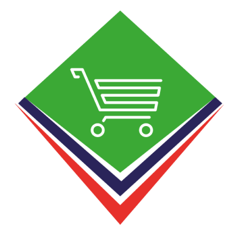

Ceramica Exhibition System (Desktop)
Multi-Platform Management Suite built with Jetpack Compose KMP
Desktop Efficiency
The desktop version of the Ceramica Exhibition System is engineered for massive data handling. Built using Jetpack Compose Multiplatform (KMP), it brings the same intuitive UI of mobile to the desktop, optimized for keyboard and mouse workflows.
Key Functionalities
- Bulk Registration: Register multiple users and staff members simultaneously.
- Advanced Reporting: Detailed overview of attendance metrics and exhibition flow.
- System Reliability: Stable real-time synchronization with mobile devices to ensure data integrity across the entire exhibition floor.
Technical Stack
Jetpack Compose KMP
Kotlin Multiplatform
Coroutines
SQLDelight